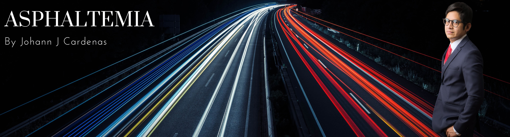

Johann Cardenas
Home
Projects
ME Overload Permitting for Airfields
Impact of HDEVs on Flexible Pavements
ML-Based Models for Airfield Pavements
Impact of DWL on Flexible Pavements
Publications
Resume
Blog
News
E-Labs
AirCrafter
Frontier
Asphera

Welcome to Asphaltemia!
A Flexible Perspective from Grad School